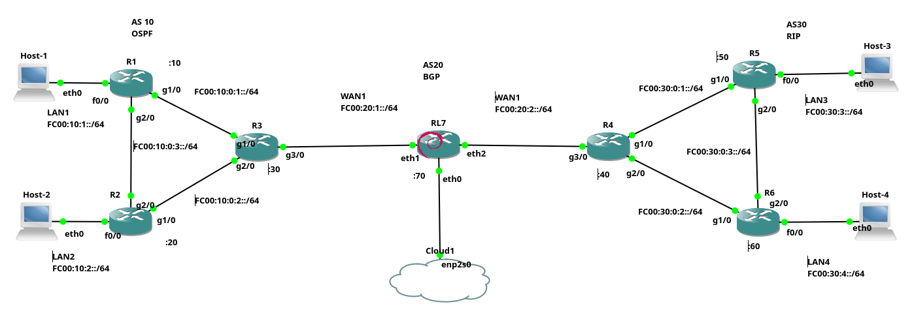

Dado o exemplo básico de configuração de rede IPv6 do Exemplo 1 (apresentada anteriormente). Vamos configurar agora um cenário de rede um pouco mais complexo, que é o ilustrado na Figura 1. Tal cenários terá roteamento: OSPF, RIP e BGP utilizando IPv6.
O objetivo aqui é apenas mostrar como configurar minimamente utiliza rede IPv6 com roteadores CISCO e Linux, bem como hosts Linux, ou seja, aqui não serão apresentadas em detalhes todas as possibilidades de configuração desses, nem as melhores práticas de configuração.
|  |
|---|
| Figura 1 - Cenário de rede IPv6 com roteadores |
De forma mais detalhada o cenário de rede da Figura 1, que será apresentado aqui é composto de:
- Três redes maiores, que chamaremos de AS10, AS20 e AS30, devido ao protocolo BGP, cada AS terá as seguintes configurações:
- AS10: é uma rede com três roteadores (R1, R2, e R3), que são roteadores CISCO, que utilizarão OSPF para sua conexão IGP;
- AS30: rede também com três roteadores (R4, R5 e R6), só que utilizam roteamento RIP como IGP, e também são roteadores CISCO;
- AS20: representa um backbone para interconectar AS10 e AS30. Possui apenas um único roteador, que é um Debian Linux, com o serviço de FRR para permitir que o Linux converse com R3 e R4 utilizando BGP.
- Todos os hosts clientes (Host-1, 2, 3 e 4) são Linux e representam redes locais.
Todo o cenário de rede é implementado no GNS3.
Assim, para conectar todo esse cenário utilizando IPv6 são necessárias as seguintes configurações:
Hosts clientes
Vamos iniciar a configuração com os hosts clientes, que são Linux Debian 10, nesses vamos configurar em ordem: IP do host, rota padrão e servidor DNS à ser utilizado pelo cliente.
A seguir são apresentadas as configurações realizadas em cada host:
- Host-1
root@Host-1:/# ip address add fc00:10:1::1/64 dev eth0
root@Host-1:/# ip route add default via fc00:10:1::10
root@Host-1:/# echo "nameserver 2606:4700:4700::1111" > /etc/resolv.conf
- Host-2
root@Host-2:/# ip address add fc00:10:2::1/64 dev eth0
root@Host-2:/# ip -6 route add default via fc00:10:2::20
root@Host-2:/# echo "nameserver 2606:4700:4700::1111" > /etc/resolv.conf
- Host-3
root@Host-3:/# ip address add fc00:30:3::1/64 dev eth0
root@Host-3:/# ip route add default via fc00:30:3::50
root@Host-3:/# echo "nameserver 2606:4700:4700::1111" > /etc/resolv.conf
- Host-4
root@Host-4:/# ip address add fc00:30:4::1/64 dev eth0
root@Host-4:/# ip route add default via fc00:30:4::60
root@Host-4:/# echo "nameserver 2606:4700:4700::1111" > /etc/resolv.conf
Resumindo o comando ip address add atribui o endereço IPv6 à cada interface de rede dos hosts, no caso todos os hosts clientes só possuem a primeira placa de rede Ethernet, ou seja, a eth0. Na sequência é utilizado o comando ip route add default via, seguido do IP de cada roteador conectado ao respectivo host, ou seja, é passado o roteador como rota padrão do host. Por fim, é realizada a configuração do servidor DNS que deve ser utilizado pelos hosts cliente, no exemplo todos utilizam o mesmo servidor de nomes que é o nameserver :4700:4700::1111, isso é armazenado no arquivo /etc/resolv.conf.
Desta forma os clientes estão configurado e aptos à utilizar a rede, entretanto isso ainda não é possível, já que é necessário primeiro configurar os roteadores.
Configuração dos Roteadores do AS10 - OSPF e BGP
A rede do AS10, será interconectada pelo protocolo OSPF. Assim, todos os hosts deste cenário conseguirão se comunicar dentro do AS3 via IGP. Para isso também deve ser realizada a atribuição dos IPs das placas de rede de cada roteador, e por fim será realizada a configuração do BGP`no R3, que dará acesso aos outros ASs, bem como à Internet.
A configuração do endereço IP e do OSPF nos roteadores da CISCO é um pouco diferente da feita no IPv4. Assim, vamos ver tal configuração em detalhes do R1.
Configuração do R1 - OSPF:
A configuração do R1, inicia-se entrando no modo configuração (enable e configure terminal). Logo na sequência é habilitado o roteamento IPv6 no roteador CISCO, já que isso vem por padrão desabilitado. Em seguida inicia-se o processo do OSPF (ipv6 router ospf 1) e é atribuído uma identificação OSPF para o R1 (router-id 10.10.10.10). Veja os comandos a seguir:
R1>enable
R1#configure terminal
R1(config)#ipv6 unicast-routing
R1(config)#ipv6 router ospf 1
R1(config-rtr)#
*May 23 13:43:03.819: %OSPFv3-4-NORTRID: OSPFv3 process 1 could not pick a router-id,
please configure manually
R1(config-rtr)#router-id 10.10.10.10
Note que na saída anterior, o OSPFv3 mostra uma saída pedindo para configurar manualmente o
router-id, sem essa configuração manual, a conexão com os outros roteadores pode apresentar problemas!
Também é importante perceber que o router-id apesar de parecer um endereço IPv4, não influência na configuração IPv6 - não dá para colocar um endereço IPv6 para o
router-id, pois esse é um número que lembra o IPv4, mas não é um IPv4!
Os comandos dados anteriormente são muito similares ao que é feito na configuração OSPF no IPv4, mas as semelhanças ficam por ai, pois a configuração das redes é bem diferente. Por exemplo, no OSPFv3 com IPv6 não é necessário informar as redes que serão anunciadas e a configuração do OSPF é dada junto com a configuração da interface de rede. Veja a seguir:
R1(config-rtr)#interface f0/0
R1(config-if)#ipv6 address fc00:10:1::10/64
R1(config-if)#ipv6 ospf 1 area 0
R1(config-if)#no shutdown
R1(config-if)#interface g1/0
R1(config-if)#ipv6 address fc00:10:0:1::10/64
R1(config-if)#ipv6 ospf 1 area 0
R1(config-if)#no shutdown
R1(config-if)#interface g2/0
R1(config-if)#ipv6 address fc00:10:0:3::10/64
R1(config-if)#ipv6 ospf 1 area 0
R1(config-if)#no shutdown
A configuração do R1 apresentada anteriormente foi separada em blocos, sendo um bloco para cada placa de rede, de forma geral para o OSPF e IPv6 é necessário em cada placa de rede:
- Escolher a placa de rede a ser configurada (ex.
interface f0/0); - Atribuir um endereço IPv6 (ex.
ipv6 address); - Dizer que tal interface faz parte do OSPF e sua área. No exemplo, foi realizado em todas interfaces o comando:
ipv6 ospf 1 area 0, que diz que tal placa de rede, está no OSPF sendo executado pelo processo número1(PID) e tal placa, faz parte da área 0 do OSPF. - O último comando é para ligar a placa de rede, que vem desligada por padrão (
no shutdown).
Note que não é preciso especificar a rede (network), nem a máscara coringa, o OSPFv3 com IPv6 fará essa relação com o IP dado na placa de rede em questão.
Vamos continuar com a configuração dos outros roteadores.
Configuração do R2 - OSPF
A configuração do R2 é muito similar à configuração do R1:
R2#enable
R2#configure terminal
R2(config)#ipv6 unicast-routing
R2(config)#ipv6 router ospf 1
R2(config-rtr)#router-id 20.20.20.20
R2(config-rtr)#interface f0/0
R2(config-if)#ipv6 address fc00:10:2::20/64
R2(config-if)#ipv6 ospf 1 area 0
R2(config-if)#no shutdown
R2(config-if)#interface g1/0
R2(config-if)#ipv6 address fc00:10:0:2::20/64
R2(config-if)#ipv6 ospf 1 area 0
R2(config-if)#no shutdown
R2(config-if)#interface g2/0
R2(config-if)#ipv6 address fc00:10:0:3::20/64
R2(config-if)#ipv6 ospf 1 area 0
R2(config-if)#no shutdown
*May 22 17:54:43.763: %OSPFv3-5-ADJCHG: Process 1, Nbr 10.10.10.10 on GigabitEthernet2/0 from LOADING to FULL, Loading Done
A explicação do R2 é a mesma feita em R1, mudando é claro os IPs de cada interface de rede utilizado.
Note que a última linha da saída apresentada anteriormente já mostra a adjacência OSPF criada entre R2 e R1.
Configuração do R3 - OSPF e BGP
A configuração do R3, inicia de forma similar à realizada em R1 e R2, veja:
R3#enable
R3#configure terminal
R3(config)#ipv6 unicast-routing
R3(config)#ipv6 router ospf 1
R3(config-rtr)#router-id 30.30.30.30
R3(config-rtr)#passive-interface g3/0
R3(config-rtr)#default-information originate
R3(config-rtr)#interface g1/0
R3(config-if)#ipv6 address fc00:10:0:1::30/64
R3(config-if)#ipv6 ospf 1 area 0
R3(config-if)#no shutdown
*May 22 17:56:09.867: %OSPFv3-5-ADJCHG: Process 1, Nbr 10.10.10.10 on GigabitEthernet1/0 from LOADING to FULL, Loading Done
R3(config-if)#interface g2/0
R3(config-if)#ipv6 address fc00:10:0:2::30/64
R3(config-if)#ipv6 ospf 1 area 0
R3(config-if)#no shutdown
*May 22 17:56:35.243: %OSPFv3-5-ADJCHG: Process 1, Nbr 20.20.20.20 on GigabitEthernet2/0 from LOADING to FULL, Loading Done
R3(config-if)#interface g3/0
R3(config-if)#ipv6 address fc00:20:1::30/64
R3(config-if)#ipv6 ospf 1 area 0
R3(config-if)#no shutdown
Nos comandos realizados anteriormente, em R3, há apenas duas grandes diferenças quanto as configurações feitas em R1 e R2, sendo essas:
- No primeiro bloco de configuração, dentro da configuração do OSPF, foi dito que a interface g3/0 não deve enviar mensagens OSPF para fora do AS10, isso é feito com o comando
passive-interface g3/0; - O primeiro bloco de comandos termina com
default-information originate, isso diz ao OSPF para propagar a rota padrão para os demais roteadores da rede do AS3, que no caso são R1 e R2 - a rota não será propagada ainda, pois falta configurar a rota padrão e isso será feito apenas na configuração do AS20.
O R3 também terá o protocolo BGP em execução, tal protocolo será configurado para estabelecer uma conexão eBGP com o roteador Linux RL7, para desta forma ter informações de rotas do AS20, AS30 e obter a rota padrão. Assim, a configuração BGP realizada em R3 é:
R3(config)#router bgp 10
*May 22 18:07:58.835: %BGP-4-NORTRID: BGP could not pick a router-id. Please configure manually.
R3(config-router)#bgp router-id 30.30.30.30
R3(config-router)#no bgp default ipv4-unicast
R3(config-router)#neighbor fc00:20:1::70 remote-as 20
R3(config-router)#address-family ipv6
R3(config-router-af)#neighbor fc00:20:1::70 activate
R3(config-router-af)#network fc00:10:1::/64
R3(config-router-af)#network fc00:10:2::/64
R3(config-router-af)#exit-address-family
Em, resumo os comandos a seguir tem as seguintes funções:
- Identifica o R3 como sendo o roteador BGP do AS10 (
router bgp 10); - Informa que será utilizado IPv6 não IPv4 (
no bgp default ipv4-unicast); - Determina o vizinho, no caso RL7 no AS20 (
no bgp default ipv4-unicast); - Depois disso vem um bloco IPv6 que:
- Ativa a conexão com o vizinho (
neighbor fc00:20:1::70 activate); - Declara as redes a serem publicadas (
network).
- Ativa a conexão com o vizinho (
Feita toda a configuração do AS10, vamos configurar agora o AS30, por ultimo configuramos o AS20.
Configuração do R4 - RIP e BGP
Vamos iniciar a configuração do AS30, ou seja, dos roteadores R4, R5, R6 e R7. A diferença desses para o AS10, é que o AS30 utiliza o RIP ao invés do OSPF.
Dito isso, iniciamos a configuração pelo R4, que terá RIP e BGP:
R4>enable
R4#configure terminal
R4(config)#ipv6 unicast-routing
R4(config-if)#interface g1/0
R4(config-if)#ipv6 address fc00:30:0:1::40/64
R4(config-if)#ipv6 rip ola enable
R4(config-if)#ipv6 rip ola default-information originate
R4(config-if)#no shutdown
R4(config-if)#interface g2/0
R4(config-if)#ipv6 address fc00:30:0:2::40/64
R4(config-if)#ipv6 rip ola enable
R4(config-if)#ipv6 rip ola default-information originate
R4(config-if)#no shutdown
R4(config-if)#interface g3/0
R4(config-if)#ipv6 address fc00:20:2::40/64
R4(config-if)#ipv6 rip ola enable
R4(config-if)#no shutdown
R4(config-if)#
A configuração do RIP é similar à realizada com o OSPF anteriormente. Sendo assim os comandos são:
- Habilitar o roteamento IPv6;
- Entrar na configuração da placa de rede desejada;
- Configurar o endereço IPv6 na interface;
- Para o IP executar o comando:
ipv6 rip ola enable, no qualolaé apenas um nome que identifica o processo. Tal como no OSPF, não é necessário declarar a rede, o próprio RIP identifica o endereço de rede da interface em que ele está sendo configurado e anuncia tal rede; - Nas interfaces
g1/0eg2/0, foi realizada uma configuração extra, para publicar a rota padrão para para toda a rede RIP. A rota padrão será fornecida futuramente via BGP.
Após o RIP estar em execução, vamos realizar a configuração BGP, para que o R4 se comunique com o RL7 no AS20 e obtenha rotas para todas as redes do cenário. Para isso foram executados os seguintes comandos:
R4(config)#router bgp 30
R4(config-router)#bgp router-id 40.40.40.40
R4(config-router)#no bgp default ipv4-unicast
R4(config-router)#neighbor fc00:20:2::70 remote-as 20
R4(config-router)#address-family ipv6
R4(config-router-af)#neighbor fc00:20:2::70 activate
R4(config-router-af)#network fc00:30:3::/64
R4(config-router-af)#network fc00:30:4::/64
R4(config-router-af)#exit-address-family
R4(config-router)#end
A configuração do BGP no R4, é extremamente similar ao que foi feito anteriormente no R3 do AS10. Então resumidamente cria-se a vizinhança entre R4 no AS30 com RL7 no AS20, e publica-se as redes fc00:30:3::/64 e network fc00:30:4::/64.
Configuração do R5 - RIP
A configuração do R5 é similar a primeira parte da configuração do R4, ou seja, é habilitado o roteamento IPv6, e em cada interface de rede do cenário, é configurado endereço IPv6 e o RIP. Veja a seguir:
R5(config)#ipv6 unicast-routing
R5(config)#interface f0/0
R5(config-if)#ipv6 address FC00:30:3::50/64
R5(config-if)#ipv6 rip routing enable
R5(config-if)#no shutdown
R5(config-if)#interface g1/0
R5(config-if)#ipv6 address FC00:30:0:1::50/64
R5(config-if)#ipv6 rip routing enable
R5(config-if)#no shutdown
R5(config-if)#interface g2/0
R5(config-if)#ipv6 address FC00:30:0:3::50/64
R5(config-if)#ipv6 rip routing enable
R5(config-if)#no shutdown
R5(config-if)#end
Configuração do R6 - RIP
A configuração do R6 é praticamente a mesma de R5, só mudando os endereços IPv6 de cada placa de rede:
R6(config)#ipv6 unicast-routing
R6(config)#interface f0/0
R6(config-if)#ipv6 address FC00:30:4::60/64
R6(config-if)#ipv6 rip routing enable
R6(config-if)#no shutdown
R6(config-if)#interface g1/0
R6(config-if)#ipv6 address FC00:30:0:2::60/64
R6(config-if)#ipv6 rip routing enable
R6(config-if)#no shutdown
R6(config-if)#interface g2/0
R6(config-if)#ipv6 address FC00:30:0:3::60/64
R6(config-if)#ipv6 rip routing enable
R6(config-if)#no shutdown
R6(config-if)#exit
Configurações do AS20 e do RL7 - BGP
A última fase deste cenário, é configurar o BGP no roteador Linux Debian chamado RL7, que está no AS20.
Para executar o BGP, foi instalado o FRR, que fornece implementação dos principais protocolos de roteamento. Assim, iniciamos a configuração do RL7 configurando os endereços IPs das placas de rede:
root@RL7:/# dhcpcd -6 -i eth0
DUID 00:04:4c:4c:45:44:00:36:32:10:80:34:b3:c0:4f:35:34:32
eth0: IAID 26:68:5c:7e
eth0: adding address 2804:828:f230:5b25:71cb:30e1:aad3:9bc6/64
eth0: adding route to 2804:828:f230:5b25::/64
root@RL7:/# ip address add fc00:20:1::70/64 dev eth1
root@RL7:/# ip address add fc00:20:2::70/64 dev eth2
Na configuração anterior a placa de rede:
eth0: é configurada via DHCP, ou seja, essa utilizará a configuração de rede que será fornecida via DHCP pelo roteador que está escondido dentro do Cloud (ver figura). Isso fornece configuração DNS e rota padrão para a Internet;eth1: essa interface tem configurada manualmente o IPv6fc00:20:1::70/64;eth2: idem à anterior com o IPv6fc00:20:2::70/64.
Na sequência foi habilitado o roteamento IPv6 (forwarding) e depois foi configurado o NAT (ip6tables), para permitir que os IPv6 ULA/privados possam navegar na Internet.
root@RL7:/# echo 1 > /proc/sys/net/ipv6/conf/all/forwarding
root@RL7:/# ip6tables -t nat -A POSTROUTING -o eth0 -j MASQUERADE
Agora vamos iniciar os serviços do FRR, no caso ligamos:
bgpd: processo responsável pelo BGP;zebra: processo que permite realizar e ver as configurações, similar ao console CISCO;staticd: permite a configuração de rotas estáticas.
root@RL7:/# /usr/lib/frr/bgpd &
[1] 957
root@RL7:/# /usr/lib/frr/zebra &
[2] 972
root@RL7:/# /usr/lib/frr/staticd &
[3] 975
Todos os processos foram iniciados em background (
&).
O processo
staticd, não é necessário a menos que você vá inserir rotas manualmente, tal como a rota padrão. Então no exemplo a seguir ele não será utilizado.
O script do FRR apresentou problemas de alocação de memória do Docker dentro do GNS3, pois isso os serviços foram iniciamos manualmente, arquivo por arquivo.
Com os processos do FRR em execução é possível acessar uma interface de configuração similar ao CISCO dentro do Linux com o comando vtysh, tal como:
root@RL7:/# vtysh
Hello, this is FRRouting (version 7.5.1).
Copyright 1996-2005 Kunihiro Ishiguro, et al.
RL7# configure terminal
RL7(config)# router bgp 20
RL7(config-router)# bgp router-id 70.70.70.70
RL7(config-router)# no bgp default ipv4-unicast
RL7(config-router)# neighbor fc00:20:1::30 remote-as 10
RL7(config-router)# neighbor fc00:20:2::40 remote-as 30
RL7(config-router)# route-map ALLOW-ALL permit 100
RL7(config-router)# address-family ipv6
RL7(config-router-af)# neighbor fc00:20:1::30 activate
RL7(config-router-af)# neighbor fc00:20:1::30 default-originate
RL7(config-router-af)# neighbor fc00:20:2::40 activate
RL7(config-router-af)# neighbor fc00:20:2::40 default-originate
RL7(config-router-af)# exit-address-family
RL7(config-router)# address-family ipv6 unicast
RL7(config-router-af)# neighbor fc00:20:1::30 route-map ALLOW-ALL in
RL7(config-router-af)# neighbor fc00:20:1::30 route-map ALLOW-ALL out
RL7(config-router-af)# neighbor fc00:20:1::30 soft-reconfiguration inbound
RL7(config-router-af)# neighbor fc00:20:2::40 route-map ALLOW-ALL in
RL7(config-router-af)# neighbor fc00:20:2::40 route-map ALLOW-ALL out
RL7(config-router-af)# neighbor fc00:20:2::40 soft-reconfiguration inbound
RL7(config-router)# end
A configuração do BGP no RL7 inicia de forma similar à configuração BGP feita em R3 e R4. Todavia no final há uma configuração extra. Vejamos a seguir os comandos apresentados em blocos anteriormente:
- Bloco 1:
- Informamos o AS do RL7 (
router bgp 20); - Atribuiu-se a identificação ao roteador no BGP (
bgp router-id 70.70.70.70); - Foi determinado para utilizar-se o IPv6 ao invés de IPv4 (
no bgp default ipv4-unicast); - Criou-se a relação de vizinhos BGP entre R3 e R4 (
neighbor). - O comando
route-map ALLOW-ALL permit 100, permite a comunicação BGP utilizada no bloco 3 (ver a seguir).
- Informamos o AS do RL7 (
- Bloco 2:
- Foi ativada a conexão TCP/IPv6 do BGP entre os vizinhos R3 e R4 (
activate); - A ideia neste cenário, é que a rota padrão fosse repassada via BGP para o AS10 e AS30, então informamos ao BGP para passar o RL7 como rota padrão para cada vizinho através das linhas terminadas com (
default-originate).
- Foi ativada a conexão TCP/IPv6 do BGP entre os vizinhos R3 e R4 (
- Bloco 3:
O FRR no Linux, tem alguma política BGP padrão que impede a troca de rotas BGP com outros roteadores. Assim, se forem executados os passos apenas dos blocos 1 e 2, a conexão BGP entre os vizinhos CISCO não serão propriamente estabelecidas (aparecerá no estado da conexão a palavra
POLICY). Para resolver esse “problema”, é necessária a execução desse terceiro bloco, que basicamente libera a entrada (in) e envio (out) de rotas BGP para o R3 e R4.
Realizadas todas as configurações em todos os elementos de rede do cenário proposto na Figura 1, vamos passar para a parte de testes.
Na verdade na prática os testes devem ser realizados a cada configuração de segmento de rede, isso facilita a identificação de erros - já que no final o cenário fica muito mais complexo para se testar e identificar com mais precisão/rapidez a onde é que está o erro.
Arquivos de configuração dos roteadores
Os links a seguir levam aos arquivos de configuração final de cada roteador, no momento em que toda a rede estava configurada e funcionando.
É importante observar esses arquivos, pois durante a construção de todo o texto anterior, pode ter sido esquecido algum comando, já que são muito e tais arquivos tem as configurações na integra.
Testes de conectividade do cenário
Verificando os vizinhos BGP:
Vamos utilizar o comando show bgp ipv6 summary, para verificar a conectividade dos vizinhos BGP:
RL7# show bgp ipv6 summary
IPv6 Unicast Summary:
BGP router identifier 70.70.70.70, local AS number 20 vrf-id 0
BGP table version 19
RIB entries 7, using 1344 bytes of memory
Peers 2, using 43 KiB of memory
Neighbor V AS MsgRcvd MsgSent TblVer InQ OutQ Up/Down State/PfxRcd PfxSnt
fc00:20:1::30 4 10 388 393 0 0 0 06:11:31 2 4
fc00:20:2::40 4 30 367 382 0 0 0 06:04:23 2 4
Total number of neighbors 2
A saída anterior mostra que há conectividade de RL7, com R3 e R4. Ou seja, todos os vizinhos BGP do cenário estão conectados. Visto isso vamos ver as todas presentes em R3:
R3#show bgp ipv6
BGP table version is 125, local router ID is 30.30.30.30
Status codes: s suppressed, d damped, h history, * valid, > best, i - internal,
r RIB-failure, S Stale
Origin codes: i - IGP, e - EGP, ? - incomplete
Network Next Hop Metric LocPrf Weight Path
*> ::/0 FC00:20:1::70 0 20 i
*> FC00:10:1::/64 :: 2 32768 i
*> FC00:10:2::/64 :: 2 32768 i
*> FC00:30:3::/64 FC00:20:1::70 0 20 30 i
*> FC00:30:4::/64 FC00:20:1::70 0 20 30 i
% NOTE: This command is deprecated. Please use 'show bgp ipv6 unicast'
A saída do comando show bgp ipv6 em R3, demostra que todas as redes estão presentes declaradas via BGP neste roteador, ou seja:
- FC00:10:1::/64;
- FC00:10:2::/64;
- FC00:30:3::/64;
- FC00:30:4::/64.
Vamos verificar todas as rotas de R3 (não só as BGP):
R3#show ipv6 route
IPv6 Routing Table - Default - 13 entries
Codes: C - Connected, L - Local, S - Static, U - Per-user Static route
B - BGP, M - MIPv6, R - RIP, I1 - ISIS L1
I2 - ISIS L2, IA - ISIS interarea, IS - ISIS summary, D - EIGRP
EX - EIGRP external
O - OSPF Intra, OI - OSPF Inter, OE1 - OSPF ext 1, OE2 - OSPF ext 2
ON1 - OSPF NSSA ext 1, ON2 - OSPF NSSA ext 2
B ::/0 [20/0]
via FE80::4086:94FF:FE54:1F2B, GigabitEthernet3/0
C FC00:10:0:1::/64 [0/0]
via GigabitEthernet1/0, directly connected
L FC00:10:0:1::30/128 [0/0]
via GigabitEthernet1/0, receive
C FC00:10:0:2::/64 [0/0]
via GigabitEthernet2/0, directly connected
L FC00:10:0:2::30/128 [0/0]
via GigabitEthernet2/0, receive
O FC00:10:0:3::/64 [110/2]
via FE80::C802:80FF:FE8D:1C, GigabitEthernet2/0
via FE80::C801:25FF:FE99:1C, GigabitEthernet1/0
O FC00:10:1::/64 [110/2]
via FE80::C801:25FF:FE99:1C, GigabitEthernet1/0
O FC00:10:2::/64 [110/2]
via FE80::C802:80FF:FE8D:1C, GigabitEthernet2/0
C FC00:20:1::/64 [0/0]
via GigabitEthernet3/0, directly connected
L FC00:20:1::30/128 [0/0]
via GigabitEthernet3/0, receive
B FC00:30:3::/64 [20/0]
via FE80::4086:94FF:FE54:1F2B, GigabitEthernet3/0
B FC00:30:4::/64 [20/0]
via FE80::4086:94FF:FE54:1F2B, GigabitEthernet3/0
L FF00::/8 [0/0]
via Null0, receive
Note que já rotas para todas as redes declaradas via BGP (B - como visto anteriormente), mas agora também temos as rotas das redes locais (L) e obtidas via OSPF (O). Observe também que a rota padrão foi fornecida via BGP (B ::/0 [20/0]), também há rotas com IPs que não cadastramos manualmente, tais como as iniciadas com FE80:, tais rotas são criadas a partir a atribuição automática de endereços IPv6, feitas pelo próprio roteador - o que é uma característica do IPv6 (o IPv4 não fazia isso por padrão).
Vamos verificar também as rotas de R4, para ver se o RIP está fazendo o trabalho dele:
R4#show ipv6 route
...
B ::/0 [20/0]
via FE80::453:3EFF:FEC2:DF48, GigabitEthernet3/0
B FC00:10:1::/64 [20/0]
via FE80::453:3EFF:FEC2:DF48, GigabitEthernet3/0
B FC00:10:2::/64 [20/0]
via FE80::453:3EFF:FEC2:DF48, GigabitEthernet3/0
C FC00:20:2::/64 [0/0]
via GigabitEthernet3/0, directly connected
L FC00:20:2::40/128 [0/0]
via GigabitEthernet3/0, receive
C FC00:30:0:1::/64 [0/0]
via GigabitEthernet1/0, directly connected
L FC00:30:0:1::40/128 [0/0]
via GigabitEthernet1/0, receive
C FC00:30:0:2::/64 [0/0]
via GigabitEthernet2/0, directly connected
L FC00:30:0:2::40/128 [0/0]
via GigabitEthernet2/0, receive
R FC00:30:0:3::/64 [120/2]
via FE80::C805:70FF:FE8D:1C, GigabitEthernet1/0
via FE80::C806:70FF:FED9:1C, GigabitEthernet2/0
R FC00:30:3::/64 [120/2]
via FE80::C805:70FF:FE8D:1C, GigabitEthernet1/0
R FC00:30:4::/64 [120/2]
via FE80::C806:70FF:FED9:1C, GigabitEthernet2/0
L FF00::/8 [0/0]
via Null0, receive
Com a saída do comando anterior em R4, vemos que há rotas BGP (B) e principalmente as rotas obtidas via RIP (R). Também nota-se que a rota padrão foi fornecida via BGP, tal como aconteceu em R3.
Por fim, vamos verificar as rotas de R5 e R1, para ver se esses possuem as respectivas rotas obtidas via RIP e OSPF dentro de seus ASs:
- R5 - RIP:
R5#show ipv6 route
...
R ::/0 [120/2]
via FE80::C804:70FF:FE48:1C, GigabitEthernet1/0
R FC00:20:2::/64 [120/2]
via FE80::C804:70FF:FE48:1C, GigabitEthernet1/0
C FC00:30:0:1::/64 [0/0]
via GigabitEthernet1/0, directly connected
L FC00:30:0:1::50/128 [0/0]
via GigabitEthernet1/0, receive
R FC00:30:0:2::/64 [120/2]
via FE80::C806:70FF:FED9:38, GigabitEthernet2/0
via FE80::C804:70FF:FE48:1C, GigabitEthernet1/0
C FC00:30:0:3::/64 [0/0]
via GigabitEthernet2/0, directly connected
L FC00:30:0:3::50/128 [0/0]
via GigabitEthernet2/0, receive
C FC00:30:3::/64 [0/0]
via FastEthernet0/0, directly connected
L FC00:30:3::50/128 [0/0]
via FastEthernet0/0, receive
R FC00:30:4::/64 [120/2]
via FE80::C806:70FF:FED9:38, GigabitEthernet2/0
L FF00::/8 [0/0]
via Null0, receive
- R1 - OSPF:
R1#show ipv6 route
....
OE2 ::/0 [110/1], tag 1
via FE80::C803:80FF:FEA9:1C, GigabitEthernet1/0
C FC00:10:0:1::/64 [0/0]
via GigabitEthernet1/0, directly connected
L FC00:10:0:1::10/128 [0/0]
via GigabitEthernet1/0, receive
O FC00:10:0:2::/64 [110/2]
via FE80::C803:80FF:FEA9:1C, GigabitEthernet1/0
via FE80::C802:80FF:FE8D:38, GigabitEthernet2/0
C FC00:10:0:3::/64 [0/0]
via GigabitEthernet2/0, directly connected
L FC00:10:0:3::10/128 [0/0]
via GigabitEthernet2/0, receive
C FC00:10:1::/64 [0/0]
via FastEthernet0/0, directly connected
L FC00:10:1::10/128 [0/0]
via FastEthernet0/0, receive
O FC00:10:2::/64 [110/2]
via FE80::C802:80FF:FE8D:38, GigabitEthernet2/0
O FC00:20:1::/64 [110/2]
via FE80::C803:80FF:FEA9:1C, GigabitEthernet1/0
L FF00::/8 [0/0]
via Null0, receive
Nas saída de R5 observa-se as rotas R, ou seja obtidas via RIP. Já em R1, temos as rotas O, pois foram obtidas via OSPF, que são os respectivos protocolos IGP de cada cenário. É importante perceber que esses roteadores que não estão executando BGP dentro de cada AS, não possuem rotas para os outros ASs, a conexão desses com os outros ASs é feita via rota padrão, que neste caso está sendo distribuída via protocolo IGP, ou seja:
- Em R1 temos a rota padrão
R ::/0 [120/2], obtida via RIP. - Já em R5, tem-se a rota padrão
OE2 ::/0 [110/1], tag 1, obtida via OSPF.
Dado os status dos roteadores do cenário, vamos realizar testes de ping a partir do Host-1, para os outros hosts do cenário, bem como um teste de acesso à Internet:
- Ping do Host-1 para o Host-2:
root@Host-1:/# ping fc00:10:2::1 -c 2
PING fc00:10:2::1(fc00:10:2::1) 56 data bytes
64 bytes from fc00:10:2::1: icmp_seq=1 ttl=62 time=22.6 ms
64 bytes from fc00:10:2::1: icmp_seq=2 ttl=62 time=29.7 ms
--- fc00:10:2::1 ping statistics ---
2 packets transmitted, 2 received, 0% packet loss, time 1001ms
rtt min/avg/max/mdev = 22.589/26.149/29.710/3.560 ms
- Ping do Host-1 para o Host-3:
root@Host-1:/# ping fc00:30:3::1 -c 2
PING fc00:30:3::1(fc00:30:3::1) 56 data bytes
64 bytes from fc00:30:3::1: icmp_seq=1 ttl=59 time=50.1 ms
64 bytes from fc00:30:3::1: icmp_seq=2 ttl=59 time=52.4 ms
--- fc00:30:3::1 ping statistics ---
2 packets transmitted, 2 received, 0% packet loss, time 1000ms
rtt min/avg/max/mdev = 50.069/51.210/52.351/1.141 ms
- Ping do Host-1 para o Host-4:
root@Host-1:/# ping fc00:30:4::1 -c 2
PING fc00:30:4::1(fc00:30:4::1) 56 data bytes
64 bytes from fc00:30:4::1: icmp_seq=1 ttl=59 time=77.0 ms
64 bytes from fc00:30:4::1: icmp_seq=2 ttl=59 time=41.7 ms
--- fc00:30:4::1 ping statistics ---
2 packets transmitted, 2 received, 0% packet loss, time 1001ms
rtt min/avg/max/mdev = 41.711/59.373/77.036/17.662 ms
- Ping do Host-1 para o www.google.com.br:
root@Host-1:/# ping www.google.com.br
PING www.google.com.br(2800:3f0:4001:81f::2003 (2800:3f0:4001:81f::2003)) 56 data bytes
64 bytes from 2800:3f0:4001:81f::2003 (2800:3f0:4001:81f::2003): icmp_seq=1 ttl=115 time=40.3 ms
64 bytes from 2800:3f0:4001:81f::2003 (2800:3f0:4001:81f::2003): icmp_seq=2 ttl=115 time=31.0 ms
^C
--- www.google.com.br ping statistics ---
3 packets transmitted, 3 received, 0% packet loss, time 2001ms
rtt min/avg/max/mdev = 30.954/36.944/40.258/4.243 ms
Os testes de ping realizados anteriormente, mostram que o cenário está funcional, pois conseguiu-se comunicação com todos os hosts do cenário, e principalmente foi possível pingar um endereço da Internet (o Google).
Conclusão
Aqui foi apresentado como configurar roteadores CISCO e Linux para utilizarem IPv6. Para tanto foram configurados apenas com IPv6 redes com OSPF, RIP e BGP e todas funcionaram perfeitamente, mostrando que os equipamentos de rede estão preparados para a troca do IPv4 pelo IPv6. Também foram configurados hosts Linux, simbolizando clientes dessas redes e todos os testes realizados com esses, incluindo acesso à Internet, foram feitos com sucesso, o que mostra que o IPv6 já está pronto para ser utilizado na infraestrutura das redes e nos clientes.
Referências
-
https://networklessons.com/cisco/ccna-routing-switching-icnd2-200-105/ipv6-ospfv3-default-route
-
https://www.cisco.com/c/en/us/support/docs/ip/ip-version-6-ipv6/112100-ospfv3-config-guide.html
-
https://www.cisco.com/c/pt_br/support/docs/ip/ip-version-6-ipv6/112135-ipv6-bgp-00.html
-
https://www.cisco.com/c/pt_br/support/docs/ip/ip-routed-protocols/112228-bgp2isp-00.html
-
https://www.reddit.com/r/networking/comments/hfmnun/frr_bgp_not_advertising_routes/
-
https://learningnetwork.cisco.com/s/question/0D53i00000Kt6hpCAB/ripng-defaultinfo-originate
-
https://www.geeksforgeeks.org/configuring-rip-for-ipv6-ripng-in-cisco/
-
https://mirrors.deepspace6.net/howtos/Linux+IPv6-HOWTO.pt_BR.pdf
-
https://ftp.unpad.ac.id/orari/library/library-sw-hw/linux-howto/ipv6/sa_ripv6.pdf